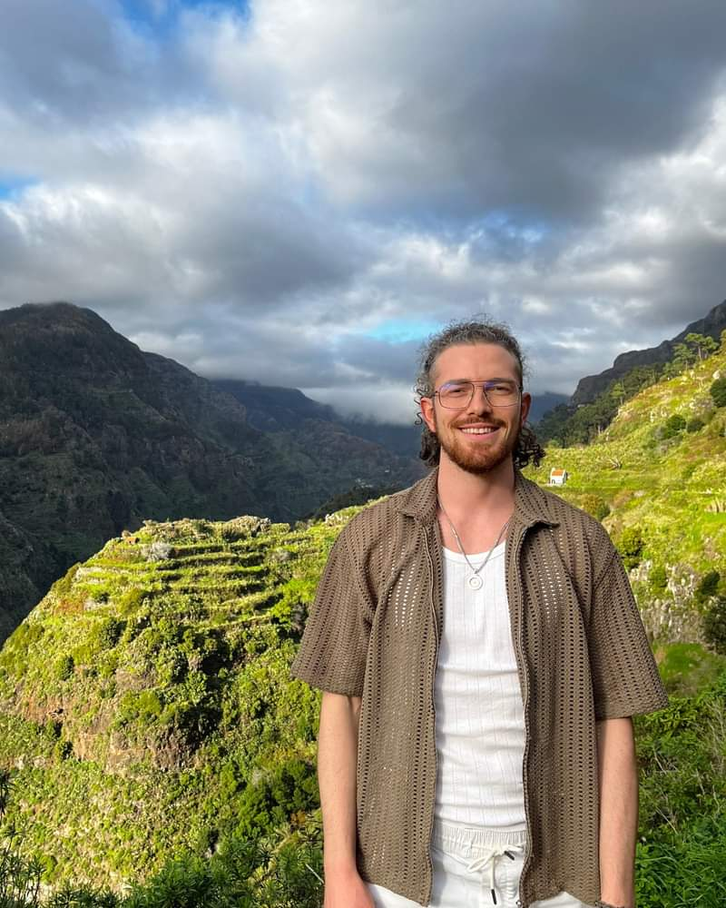
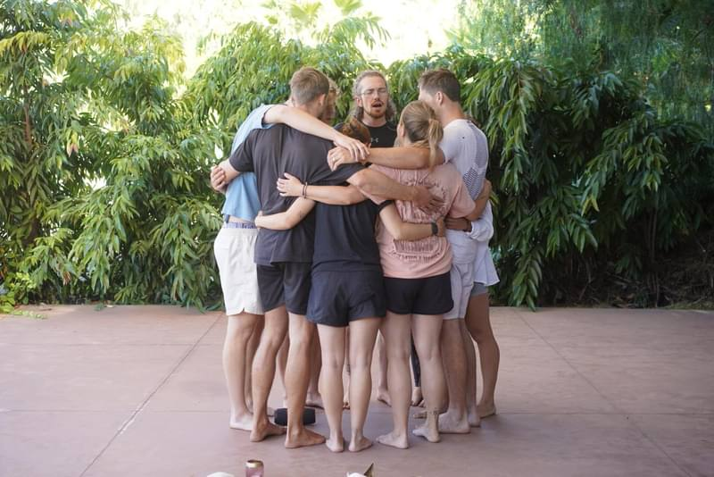
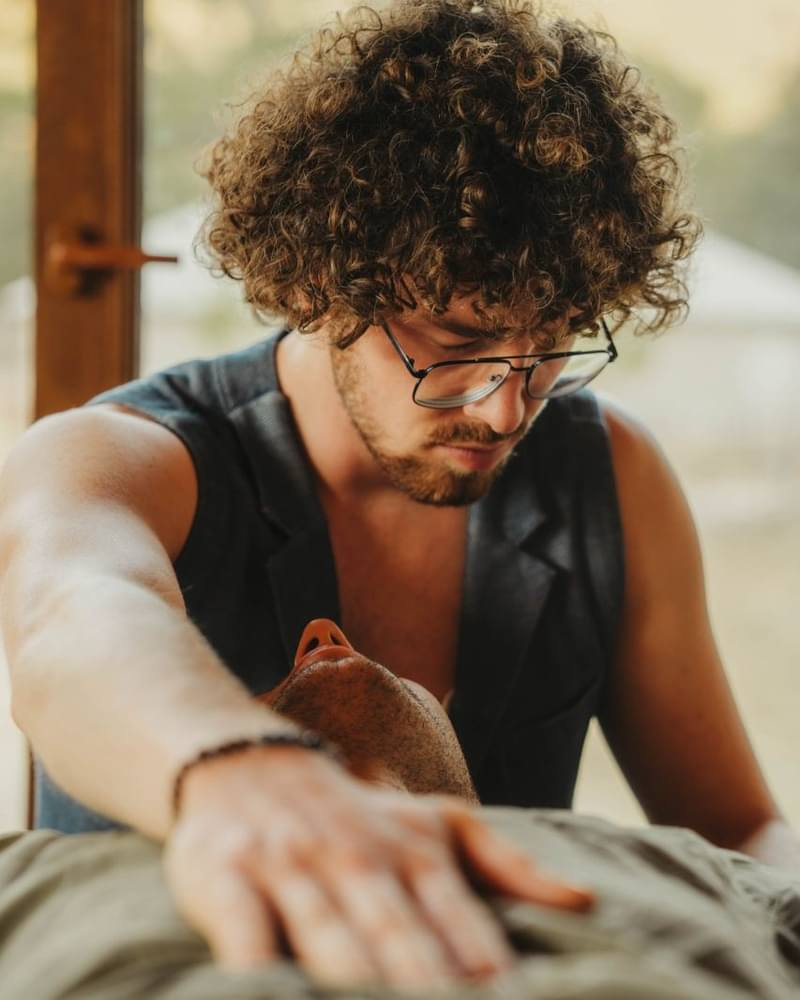

Körperorientiertes Scham-Coaching · online & in München / Regensburg
Du bist nicht falsch. Du bist UnVerschämt richtig.
Ich bin Franz — Coach für das Thema, über das kaum jemand spricht: Scham. In 1:1-Sessions mit Neo Emotional Release begleite ich dich raus aus dem Dauerkampf mit dir selbst, zurück in deinen Körper und deine Lebendigkeit.
Auch auf Instagram @franz.unverschaemt

- Zertifizierter N.E.R.-Practitioner Neo Emotional Release, 2026
- 1:1 — online oder vor Ort München & Regensburg
- Methode mit Fundament Neo Emotional Release nach David Manning
- Zum Reinhören „Gespräche mit Franz Heinrich" auf Spotify
Kennst du das?
Der Kampf, den niemand sieht
Der innere Richter
Eine Stimme in dir kommentiert alles, was du tust — und findet zuverlässig einen Fehler.
Falsch, zu viel, nicht genug
Egal, was du erreichst: Das Gefühl bleibt, dass mit dir grundlegend etwas nicht stimmt.
Muster, die nicht weichen
Du hast gelesen, reflektiert, an dir gearbeitet — und landest doch wieder an derselben Stelle.
Funktionieren statt leben
Nach außen läuft alles. Innen fühlst du dich taub, angespannt oder einfach nur erschöpft.
Ständig auf der Hut
Du hinterfragst deine Worte, deine Gefühle, deine Entscheidungen — als müsstest du dich für dich selbst rechtfertigen.
Nähe mit angezogener Bremse
Du zeigst dich nur so weit, wie es sich sicher anfühlt. Wirklich gesehen zu werden bleibt riskant.
Nichts davon ist eine Schwäche. Es ist Scham — und sie tut nur ihren alten Job: dich zu schützen. Sie darf jetzt etwas Neues lernen.
Ein anderer Blick
Was, wenn nichts an dir falsch ist?
Scham entsteht dort, wo wir gelernt haben, Teile von uns zu verstecken. Sie sitzt nicht in deinen Gedanken — sie lebt in deinem Körper: als Enge, Taubheit, Daueranspannung. Genau deshalb reicht Verstehen allein so oft nicht aus. Veränderung beginnt, wo du fühlen darfst, was du lange weggedrückt hast — in einem Raum, in dem du damit nicht allein bist.
„Deine Emotionen sind nicht das Problem, sondern deine Beziehung zu ihnen."
Meine Arbeit
Drei Wege in dein UnVerschämtes Leben
1:1 N.E.R.-Sessions
Körperarbeit für deine Emotionen: Über Druckpunkte, Atem und meine verbale Begleitung darf sich zeigen, was lange festsaß. Online oder vor Ort.
Mehr zur Methode ↓UnVerschämt Coaching
Deine 1:1-Begleitung für radikale Selbstakzeptanz: Wir schauen deine Scham gemeinsam an — Schritt für Schritt, in deinem Tempo, bis du dich wieder zeigen kannst.
Kennenlernen ↓
Retreats & Events
Dich selbst in voller Lebensenergie erfahren — gemeinsam mit Menschen, die denselben Weg gehen. An Orten, an denen du ganz du sein darfst.
Termine auf Anfrage ↓Die Methode
Was ist Neo Emotional Release?
N.E.R. ist eine körperorientierte Methode, entwickelt von David Manning: psychosomatische Prozessarbeit, die deine Emotionen nicht zerredet, sondern über den Körper in Bewegung bringt. Vier Elemente greifen dabei ineinander:

Eine Session: Berührung, Atem, deine Emotionen — und jemand, der bleibt.
Berührung & Druckpunkte
Gezielter Druck an Stellen, an denen dein Körper Spannung hält — damit gehaltene Emotionen sich endlich zeigen dürfen.
Atem
Dein Atem führt dich an Orte, die der Kopf lieber meidet — und hält dich dabei sicher im Hier und Jetzt.
Stimme & Führung
Ich begleite dich mit Worten durch den ganzen Prozess. Du musst nichts erklären, nichts leisten — nur da sein.
Innere Anteile
Mit Visualisierung geben wir den Seiten in dir Raum, die lange niemand sehen durfte — auch der, die sich schämt.
Ehrlich gesagt: Coaching und N.E.R. sind Prozess- und Persönlichkeitsarbeit — kein Heilverfahren. Sie ersetzen keine Psychotherapie und keine ärztliche Behandlung.
Über mich
Experte fürs Schämen —
aus eigener Erfahrung
Hi, ich bin Franz. Scham kenne ich nicht aus Lehrbüchern, sondern von innen: das Kleinmachen, das Verstecken, den täglichen Kampf gegen die eigenen Gefühle.
Heute begleite ich Menschen genau dorthin, wo es weich wird — mit liebevollen Augen, sanfter Neugier und einer guten Portion Bodenständigkeit. Ich glaube fest daran: Du bist nicht zu viel und nicht zu wenig. Du bist vollständig — mit deiner Geschichte, deinem Schmerz und allem, was zu dir gehört.
Meine Arbeit sorgt dafür, dass du das nicht nur denkst, sondern fühlst. Damit du gesehen wirst, gehört wirst — und deinen Beitrag in dieser Welt aus voller Kraft leben kannst.
- UnVerschämt
- Herzlich
- Bodenständig
Was wir überdenken, unterfühlen wir.
— Franz Heinrich
Passt das?
Für wen diese Arbeit ist — und für wen nicht
Du bist hier richtig, wenn du …
- nicht nur über dich reden, sondern dich endlich wieder spüren willst
- das Gefühl kennst, trotz all deiner Arbeit an dir auf der Stelle zu treten
- dir eine Begleitung wünschst, die warm und ehrlich ist — ohne Floskeln
- deinen Emotionen wieder vertrauen willst — auch den unbequemen
… und wann ein anderer Weg dran ist
Wenn du dich in einer akuten psychischen Krise befindest oder eine Erkrankung behandeln lassen möchtest, ist ärztliche oder psychotherapeutische Hilfe der richtige erste Schritt — kein Coaching. Das sage ich dir auch genau so im Gespräch.
Sofort erreichbar: Notruf 112 · Telefonseelsorge 0800 111 0 111 (kostenlos, rund um die Uhr) · Krisendienst Bayern 0800 655 3000
So starten wir
Dein Weg in drei Schritten
Schreib mir
Über das Formular oder Instagram — formlos, unfertig, genau so, wie es gerade in dir aussieht. Mehr braucht es nicht.
Kennenlern-Gespräch
Wir schauen gemeinsam, ob es passt: dein Thema, meine Arbeitsweise, unser Draht. Ehrlich und ohne Verpflichtung.
Deine Begleitung
Einzelsession oder Paket, online oder vor Ort — wir wählen das Format, das zu deinem Prozess passt. Tempo bestimmst du.
Sessions & Pakete
Formate für deinen Weg
Einzelsession
Eine Session, ganz für dich: ankommen, ausprobieren, einen ersten ehrlichen Blick auf dein Thema werfen.
3er-Paket
Drei Sessions mit Boden unter den Füßen: dranbleiben, vertiefen und erste Veränderungen im Alltag verankern.
6er-Paket
Sechs Sessions für deinen Prozess: Schicht für Schicht — mit Zeit zum Integrieren zwischen den Terminen.
Preise & Termine besprechen wir im Kennenlern-Gespräch — persönlich, transparent und ohne Kleingedrucktes. Jede Begleitung beginnt mit diesem Gespräch.
Häufige Fragen
Was du vielleicht gerade denkst
Was passiert in einer N.E.R.-Session?
Wir beginnen mit einem kurzen Gespräch: Was ist gerade da? Danach geht es in die Körperarbeit — mit Atem, Druckpunkten und meiner Stimme als Begleitung. Du musst nichts vorbereiten und nichts „richtig" machen. Das Tempo bestimmst du, jederzeit.
Funktioniert das wirklich auch online?
Ja — ich arbeite online und vor Ort. In Online-Sessions leite ich dich durch Atem, Visualisierung und Selbstberührung an den Druckpunkten an. Was du brauchst: einen ruhigen Raum, eine Matte oder ein Bett und eine stabile Verbindung.
Ich schäme mich, über meine Scham zu reden. Und jetzt?
Willkommen — genau dafür gibt es diesen Raum. Scham lebt davon, versteckt zu bleiben; sie verliert ihre Macht, wo sie gesehen wird, ohne bewertet zu werden. Du musst hier nichts erklären und nichts beschönigen. Wir gehen in deinem Tempo.
Ersetzt das eine Psychotherapie?
Nein — und das sage ich bewusst deutlich. Coaching und N.E.R. sind Persönlichkeits- und Prozessarbeit. Bei psychischen Erkrankungen und in akuten Krisen gehört ärztliche oder psychotherapeutische Hilfe an die erste Stelle. Gern auch parallel: Coaching kann eine Therapie begleiten, aber nie ersetzen.
Wie viele Sessions brauche ich?
Ehrliche Antwort: Das ist so individuell wie deine Geschichte. Manche kommen mit einem konkreten Thema für wenige Sessions, andere gehen einen längeren Weg. Im Kennenlern-Gespräch bekommst du meine ehrliche Einschätzung — keine Verkaufsformel.
Mit wem arbeitest du?
Mit Erwachsenen, die bereit sind hinzuschauen — unabhängig von Alter und Geschlecht. Gemeinsam ist meinen Klient:innen meist eins: Sie haben schon viel verstanden und wollen jetzt endlich fühlen.
Kontakt
Lass uns kennenlernen
Schreib mir, was dich beschäftigt — formlos und ehrlich. Ich lese jede Nachricht selbst und melde mich persönlich bei dir.
Bitte sende keine sensiblen Gesundheitsinformationen über das Formular — alles Weitere besprechen wir im geschützten Gespräch.